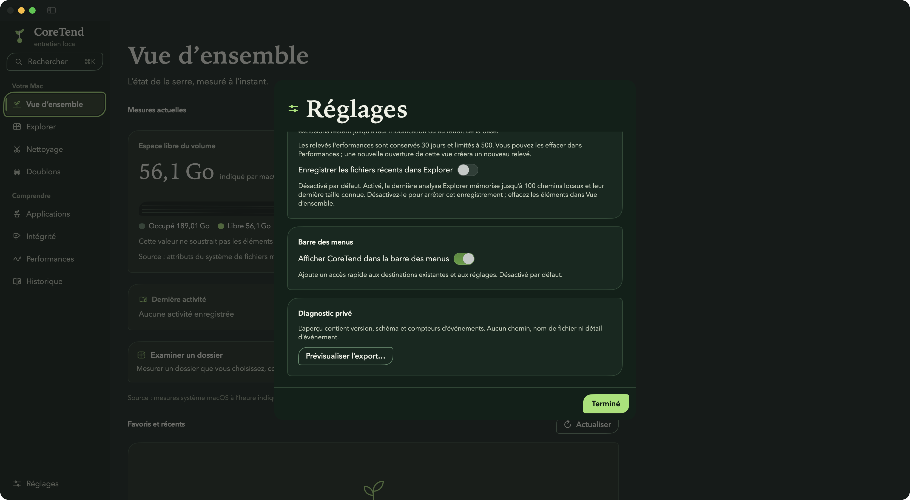

Inspection locale
Une analyse lit les métadonnées du dossier sélectionné. Le contenu est lu uniquement si nécessaire au calcul d’empreintes comparées pour les doublons exacts. L’analyse n’écrit pas dans l’arborescence inspectée. L’accès dépend du dossier choisi et des permissions macOS.
Chemins et historique conservés
Les favoris et l’historique récent activé conservent localement les chemins et dernières tailles connues. L’historique récent est désactivé par défaut et limité à 100 entrées. Événements et mesures Performance manuelles restent locaux ; conservation et export complet restent à qualifier.
Un déplacement exige votre décision
Une candidate n’est jamais retirée du seul fait de sa détection. Vous choisissez les éléments, examinez la proposition, confirmez l’action ; CoreTend revalide ensuite les cibles avant d’utiliser la Corbeille macOS. L’app ne promet pas de retirer les données associées.
Limite réseau
Cette reconstruction ne comporte ni télémétrie, ni compte, ni synchronisation cloud. Un lien HTTPS de mise à jour déclaré par l’app peut s’ouvrir dans votre navigateur après votre clic ; ce signal ne vérifie pas le flux indépendamment.
